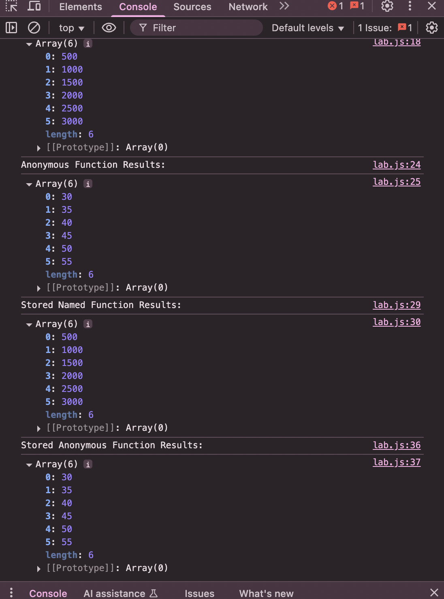

The challenge for this lab was to experiment with the map() function using both named and anonymous functions. An array of numbers was created and modified with different operations passed in as callbacks.
There were no major issues during the process. One minor challenge was structuring the anonymous function correctly, but checking output in the console helped resolve it.
Console output displays the results of applying both the named and anonymous functions using map(). Open the browser's developer console to view the output.
This is an image of the console for this lab:
This lab provided a clearer understanding of how map() works with different types of functions. Using callbacks simplifies array transformations and makes the code more concise compared to traditional loops.